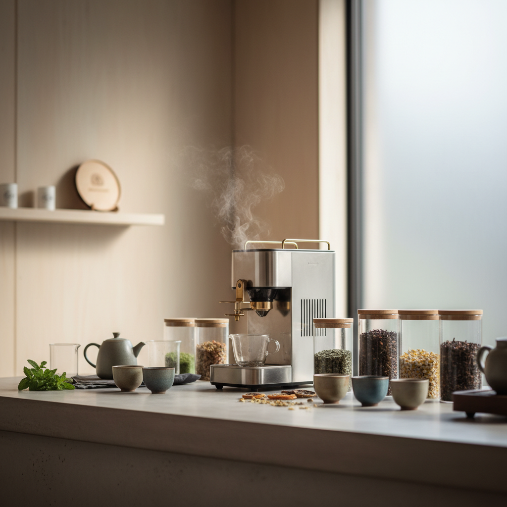
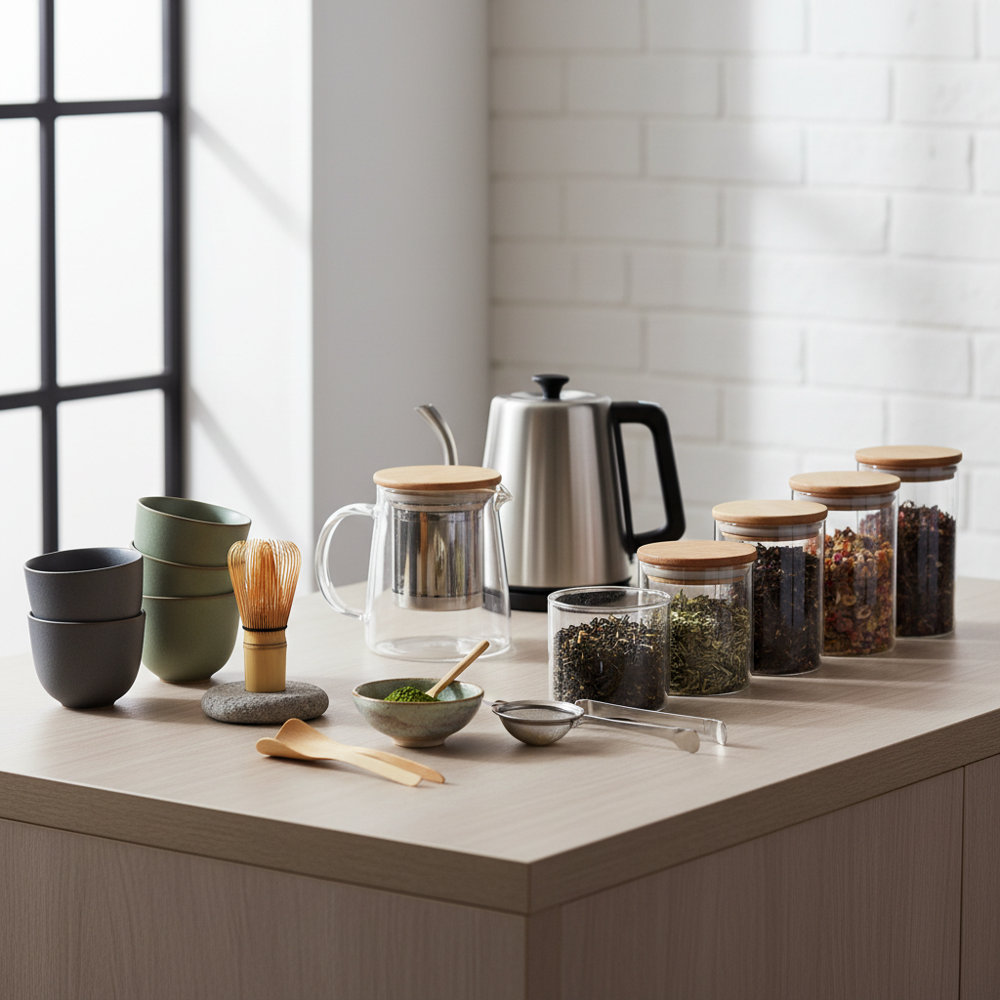
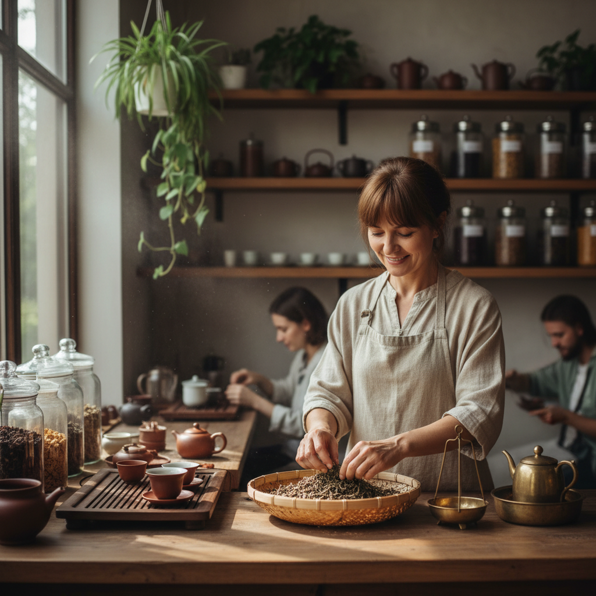

Elevating Sydney's tea culture through master brewing and premium selections.
From private ceremonies to curated shop collections.

Experience the meditative art of tea with a guided ceremony hosted by P.
Rare single-origin leaves sourced directly from sustainable tea gardens.

Master the perfect brew. Learn temperature control and flavor profiles.
I'm P, a dedicated tea maker based in Sydney. My passion lies in the delicate balance of flavor and ritual. For over a decade, I have traveled and studied the art of the leaf to bring you the finest tea experience in Australia.
Every cup is a story. I invite you to slow down and enjoy the journey with us.
Chat with P★★★★★
"The most calming and professional tea experience in Sydney. P's knowledge is unparalleled."